Participant flow
We recruited 18 participants. Data from 15 participants were included in the final analysis after 3 participants were excluded because of data problems.
University research project · 8 credits
This was an 8-credit group research project at Ulm University. We tested whether pupil-based measures, especially the Low/High Index of Pupillary Activity (LHIPA), could distinguish lower and higher cognitive load across desktop and VR setups. Participants completed 1-back and 3-back tasks while we recorded pupil data with different eye-tracking systems.
 AI-generated illustration for the cognitive-load study.
AI-generated illustration for the cognitive-load study.
VR can place different sensory and interaction demands on a user than a desktop setup. We wanted to know whether LHIPA could work as a stable workload measure across both environments and across different eye-tracking devices, rather than only under one recording condition.
The wider aim was to compare subjective mental effort with pupil-based measures and understand how much the recording setup and data quality affected the result.
I reviewed related work, contributed to parts of the study design, helped run participant sessions, and worked on the data-processing pipeline. My work included aligning task logs, SMEQ responses, and eye-tracking recordings; cleaning and segmenting the data; and preparing SMEQ, LHIPA, IPA, and PupilDiff values for later analysis.
Participants completed the same 1-back and 3-back tasks in three setups:
Before the main experiment, participants received an explanation of the study, gave informed consent, and practised the N-back task. Each task block began with a 30-second baseline and continued with either the 1-back or 3-back task while gaze and pupil data were recorded. Participants completed an SMEQ mental-effort rating after each block.
The environment order was balanced as far as scheduling allowed. The 1-back and 3-back order was counterbalanced, and the task appeared in the upper-left, centre, and bottom-right positions across the experiment.
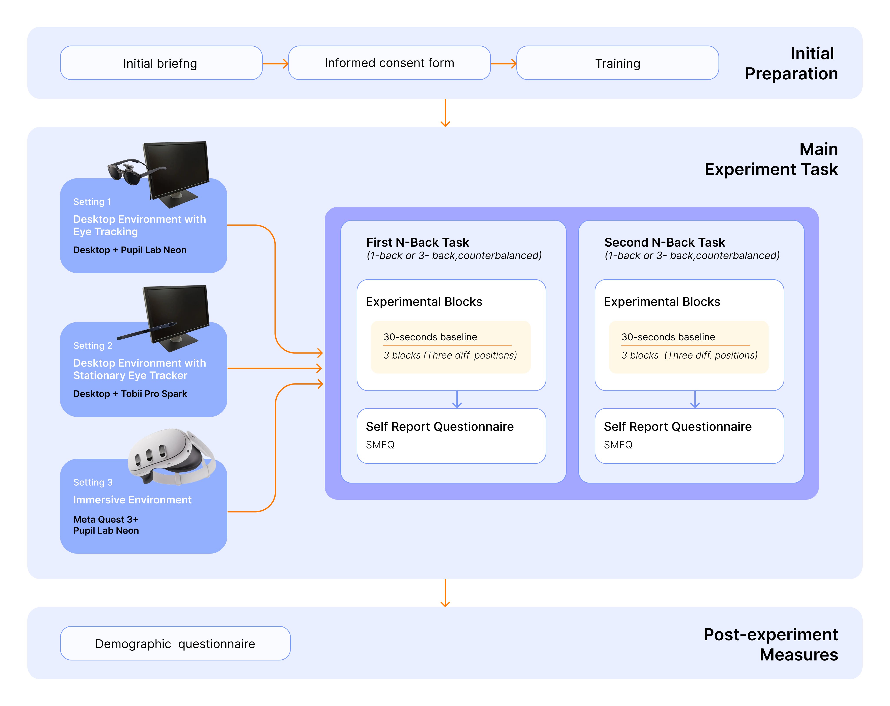
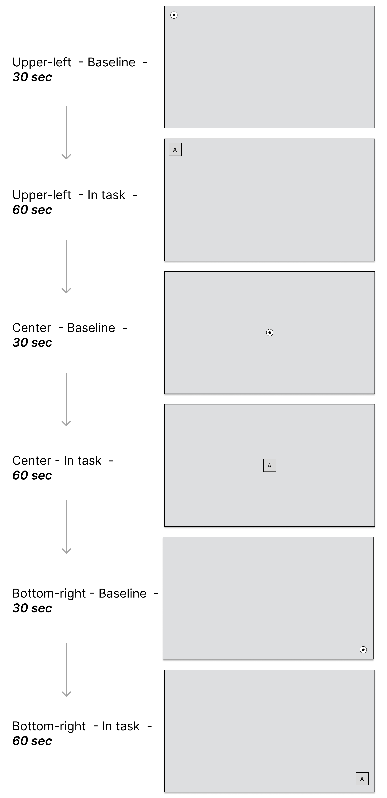
We recruited 18 participants. Data from 15 participants were included in the final analysis after 3 participants were excluded because of data problems.
The three setups allowed us to compare desktop and VR conditions while also examining differences between stationary and head-mounted eye-tracking systems.
Each block contained a 30-second baseline, the N-back task, and an SMEQ rating. Task responses were collected by button press.
We used one subjective measure and three pupil-based measures. This allowed us to compare how difficult the task felt to participants with changes found in the pupil signal.
LHIPA was the main pupil-based measure. The Index of Pupillary Activity (IPA) and baseline-corrected pupil-diameter change (PupilDiff) were used as complementary measures.
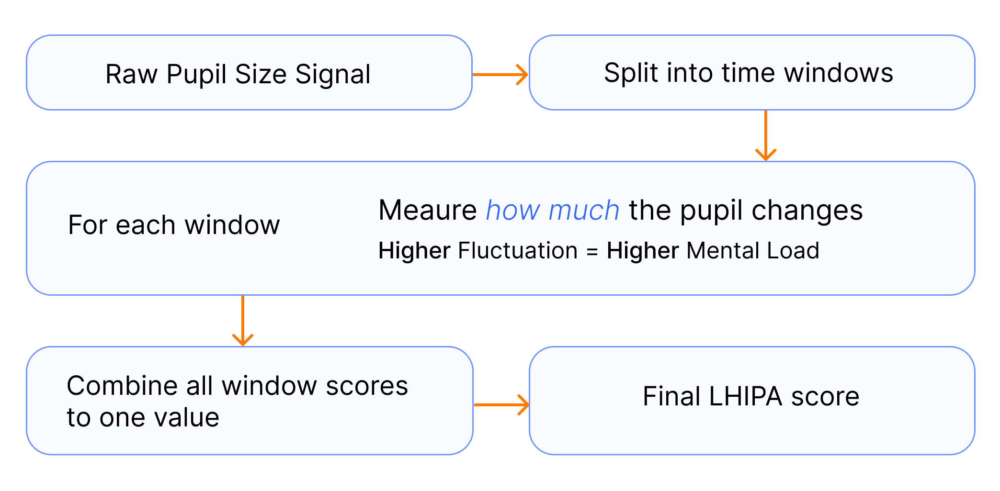
Participants completed the Subjective Mental Effort Questionnaire after every task block.
LHIPA was the main pupil-based measure. It is calculated from changes in pupil-diameter oscillations over time and was used to compare workload across tasks and recording setups.
The Index of Pupillary Activity (IPA) and baseline-corrected pupil-diameter change (PupilDiff) were used as complementary measures.
The recordings first had to be aligned, cleaned, and divided into comparable baseline and task segments. This was especially important because the Tobii Pro Spark and Pupil Labs Neon recorded at different sampling rates.
The main processing steps were:
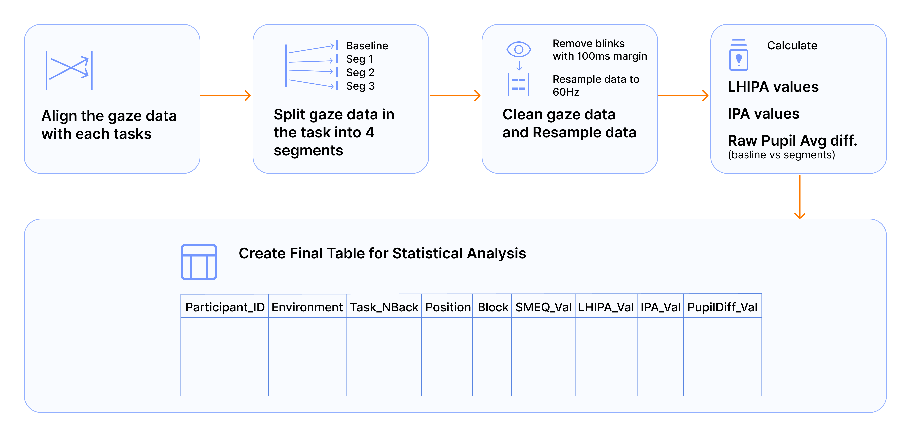
SMEQ ratings were higher for the 3-back task than for the 1-back task. Participants therefore experienced the 3-back condition as more mentally demanding.
In the desktop Neon and VR Neon recordings, LHIPA decreased as task difficulty increased. The pattern was clearer in these two setups, where the pupil signal was more stable.
The stationary Tobii recordings contained more noise and outliers. This made the calculated LHIPA values less stable and limited direct comparison across devices.
IPA and PupilDiff gave additional views of the workload response. PupilDiff also appeared to be more sensitive to the position of the task on the display.
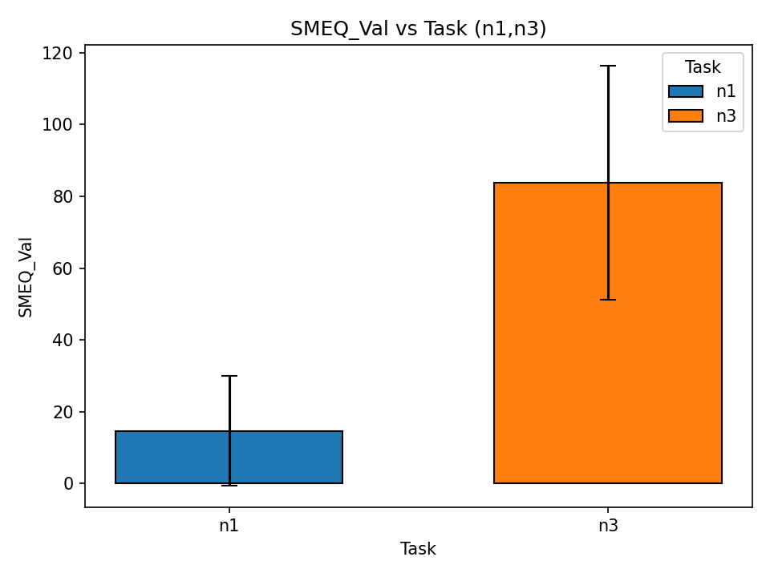
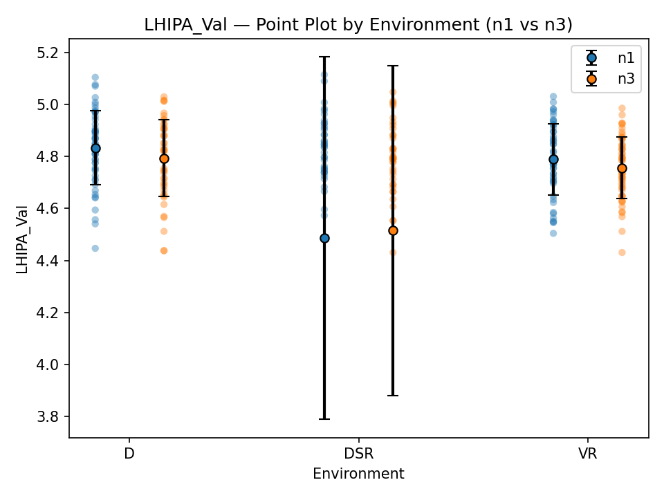
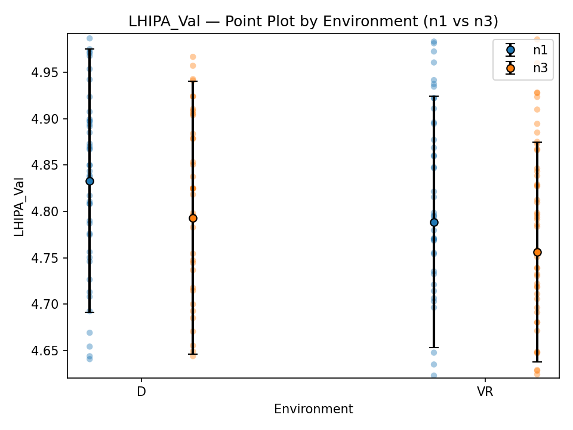
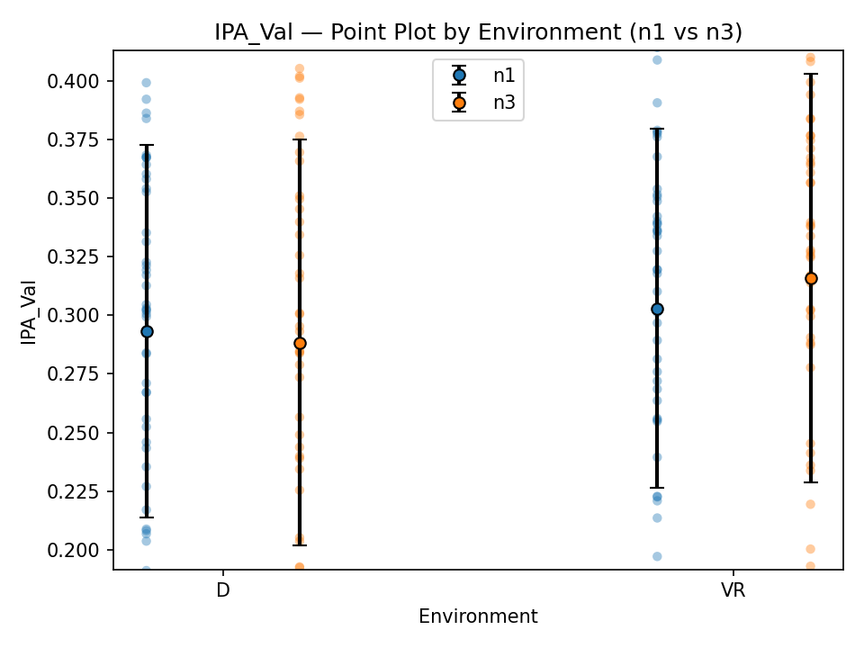
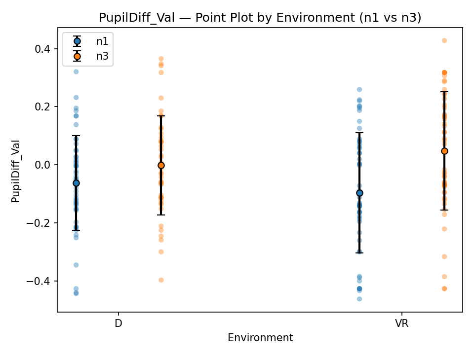
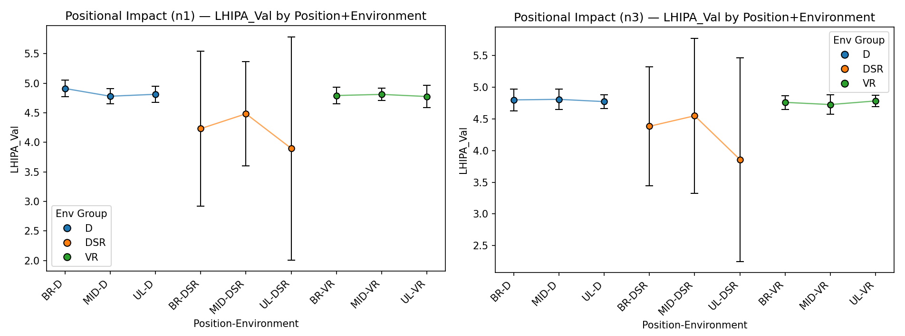
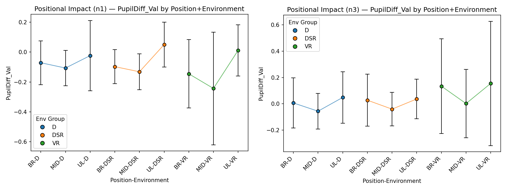
The results do not show that LHIPA is a universally reliable workload measure. It appeared promising in the cleaner Neon recordings, but its usefulness depended strongly on signal quality, blink handling, missing data, sampling rate, and task position.
The project also showed why subjective and physiological measures should be interpreted together. SMEQ gave a clear account of perceived effort, while the pupil measures showed how much the technical recording and processing choices affected the physiological result.
Only 15 participants were included in the analysis, and the recording quality was not equally stable across all three setups. A useful next step would be to improve blink and missing-data handling and test the measures again with more consistent recording conditions.
OPEN TO RESEARCH & HCI OPPORTUNITIES